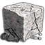

This is 28+2 fc knights, but I try extra hard to not get housed, and use houses and palisades to build early walls around resources, especially the first lumber camp. I also included builders as a separate resource column in this one. If you get the opportunity, also build palisade walls near the first lumber camp and near the first gold mine. If the map allows, I like to put the lumber camp near the edge of the map or in a lucky defensive forest. If I can I'll sometimes send the second lumber camp to the edge or far away and palisade wall it too.
| Build Order | |
|
 | |
|
|---|---|---|---|---|---|
| 3 to build 2 houses, then to sheep | 3 | ||||
| 6 on sheep | 6 | ||||
| 1 to build lumber camp then to wood | 1 | 6 | 1 | ||
| 1 to build two houses near first lumber camp, then to wood | 2 | 6 | 1 | ||
| 2 to wood | 4 | 6 | |||
| 1 lure boar | 4 | 7 | |||
| 5 on berries | 4 | 12 | |||
| +2 on boar, + farms | 4 | 14 | |||
| 1 to build gold mine with defensive houses and barracks | 4 | 14 | 1 | ||
| ↑10 on wood [2nd LC] | 10 | 14 | 1 | ||
| 2 on gold | 10 | 14 | 2 | 1 | |
| Loom | |||||
| Advancing to Feudal | |||||
| ↑8 on farms | 10 | 14 | 2 | 1 | |
| Finish barracks, send builder to gold | 10 | 14 | 3 | ||
| Feudal | |||||
| Build stable + blacksmith | 7 | 14 | 3 | 3 | |
| +2 on gold | 7 | 14 | 5 | 3 | |
| Builders back to wood | 10 | 14 | 3 | ||
| Advancing to Castle | |||||
| Double-bit axe + horse collar | |||||
| +2 on farms (10) | 10 | 14 | 5 | ||
| Build 2nd stable |
| Benchmarks | A+ | A | B | C | D | E |
|---|---|---|---|---|---|---|
| 28 pop Feudal | 10:30 | 10:40 | 10:55 | 11:15 | 11:40 | 12:15 |
| 28+2 pop Castle | 13:35 | 13:50 | 14:05 | 14:25 | 14:55 | 15:35 |
| 6 Knights | 18:00 | 18:15 | 18:30 | 18:50 | 19:20 | 20:00 |